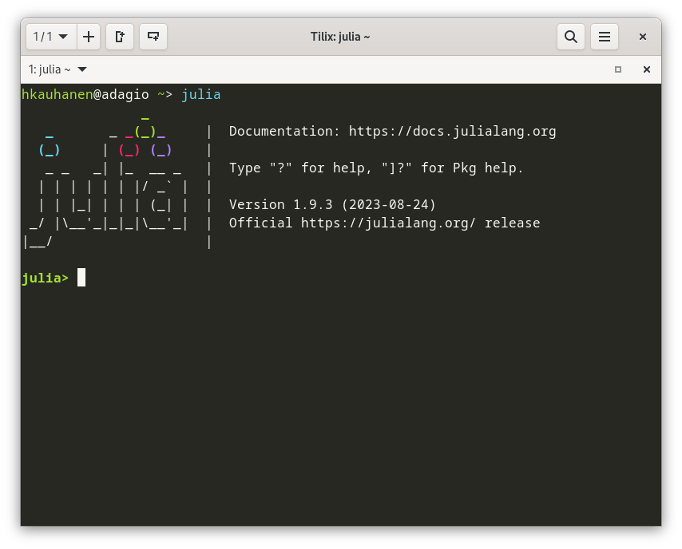

2+35Visit https://julialang.org/ to download and install Julia on your system. Make sure to download version 1.9.3 or newer. See here for platform-specific installation instructions.
If you already speak another programming language, it is useful to refer to this document that details some noteworthy differences between Julia and common languages such as R, Python and C.
Next, launch Julia. How this is done depends on your operating system—you may find the program in a “Start” menu or similar, or you may have to launch it from the command line by typing julia.
Having successfully launched Julia, you should see a screen like the one depicted in Figure 1.

This is called the Julia REPL (which stands for the read-eval-print-loop). Here you can type in commands and Julia will execute them for you. For example, try the following, which will simply add together the two numbers 2 and 3 and return the result:
2+35Or you can store a couple of strings in variables and print them:
firstname = "John"
lastname = "Doe"
println("My full name is $firstname $lastname.")My full name is John Doe.In principle, it is possible to do all your Julia programming using the REPL and external files, so-called scripts. Often, however, it is useful to carry out program development in a dedicated programming environment (also sometimes known as IDEs, for “integrated development environment”). In Julia, one such environment is called Pluto. We will now install Pluto and launch it.
Packages are additional program libraries that extend the capabilities of the base system. In Julia, they are easy to install using a package manager, which is called Pkg. To use Pkg, we first need to tell Julia that we want to use it:
using PkgNext, we use the Pkg.add function to install Pluto:
Pkg.add("Pluto")You can use this same logic to install whichever Julia package you may happen to need. Available packages are listed at https://juliapackages.com/.
Installing a package may take a while; this is often because packages have interrelationships—dependencies—between them. When you ask Julia to install Pluto, for example, Pkg will install for you all packages that Pluto depends on but that might not already be present on your system. Wait patiently for the installation to finish.
Having successfully installed Pluto, we instruct Julia that we want to use it, and call the Pluto.run() function. This will start Pluto in a browser window.
using Pluto
Pluto.run()You should see something like the screen in Figure 2.

Click on Create a new notebook. A notebook will open up, and you will be able type in code in a so-called code cell. Try typing up our little addition example from above:
2+3Unlike in the REPL, where pressing Enter executes the code, in a Pluto notebook cell Enter makes a new line. Use the combination Shift+Enter to execute the code instead. This will display the result above the code cell.
Next, create another cell by clicking on the small plus (+) sign. Type in our second example and try executing it with Shift+Enter:
firstname = "John"
lastname = "Doe"
println("My full name is $firstname $lastname.")Pluto will throw an error! Why is this? Essentially, we are dealing with a design choice made by the Pluto developers, which requires multi-expression cells to be surrounded in a begin ... end block. Fortunately, this is very easy to do. Simply click on “Wrap all code in a begin … end block”, or add the begin and end keywords manually:
begin
firstname = "John"
lastname = "Doe"
println("My full name is $firstname $lastname.")
endAnd voilà—we have all we need!

The following sections will consist of a very brief introduction to some key aspects of Julia that we will need to conduct our model simulations. Naturally, this introduction is nowhere near comprehensive. For full details, refer to the official Julia Documentation.
Most programming languages make available a number of different types of data. Fundamental types in many modern programming languages include integers (used to represent integers), floating-point numbers (used to represent real numbers), Booleans (used to represent truth values), strings (character sequences), various types of arrays (used to represent tuples, vectors, matrices etc.), as well as lists (collections of objects).
We have already seen integers and strings. These can be stored in variables. For instance, above we stored the strings "John" and "Doe" in the variables firstname and lastname. Think of variables as “boxes” that hold data. The contents of these boxes can be changed. For example, we reuse the firstname variable if we want to change our name:
firstname = "Jane"Now the variable firstname will hold the string "Jane" instead of the string "John".
We can even do something like the following, whereby the variable’s type changes from string to integer:
firstname = 2In Pluto, if a variable is changed in one code cell, then its value also changes in all other cells that make use of the same variable.
So-called floating-point numbers, which represent real numbers up to some precision which is determined by both the programming language and the computer’s architecture, are easy to create: just make sure that there is a decimal point in the number:
smallnumber = 2.5
evensmallernumber = 2.0
largenumber = 49812093.30Most mathematical operations are self-explanatory:
smallnumber = 2.5 + 4.0 # equals 6.5
anothernumber = evensmallernumber * 2 # equals 4.0
divided = anothernumber/4.0 # equals 1.0Anything written after a hash sign (#) on a line in Julia constitutes a comment. Comments are not executed by the compiler; it does not “see” them. They can (and should!) be used to add explanations to source code that aid the programmer or someone else who might read the code later. For example, when defining custom types or functions (see below), it is good practice to add some lines of comments before the type or function definition, explaining what the type contains or what the function does, what the arguments to the function are, and what (if anything) the function returns.
To represent a tuple (or vector) of numbers, we can make an array:
manynumbers = [1, 4, 6, 2, 20]The contents of an array can be fetched one by one, if necessary, or subsetted:
manynumbers[2] # equals 4
manynumbers[2:3] # equals [4, 6]The special keyword end fetches the last item in an array:
manynumbers[end] # equals 20Operations and functions (we’ll talk about functions below) in Julia can be broadcast, meaning that they are applied elementwise to all elements in an array. To take a simple example, suppose we want to add 1 to each element in our array of integers, manynumbers. The following won’t do, because we’d be trying to add a scalar to a vector, something that isn’t mathematically defined:
manynumbers + 1 # will throw an errorThe following will work, but is cumbersome to write:
manynumbers + [1, 1, 1, 1, 1]5-element Vector{Int64}:
2
5
7
3
21Instead of this, we can use the special . prefix to apply the sum operation elementwise:
manynumbers .+ 15-element Vector{Int64}:
2
5
7
3
21Note how the output is exactly the same.
Sometimes basic types aren’t quite enough. For example, suppose we want to simulate the behaviour of a speaker–listener, i.e. an agent that has some representation of language and can interact with other agents. Is it an integer? A floating-point number? A string? It isn’t really any of these. What we want to do is to be able to define our own data structure, our own type.
For example, suppose that we can represent a speaker’s grammar as an integer (on the assumption that we index all grammars with the natural numbers). Suppose, moreover, that we are interested in a speaker’s age as well as its social class. Then we might want a data type such as the following, called a composite type in Julia:
mutable struct Speaker
grammar::Int
age::Float64
class::String
endIn this definition, we introduce a composite type consisting of three primitive type inside it: a grammar, an age, and a (social) class. The first is declared to be an integer, the second a floating-point number with 64 bits of precision, and the third a string.
The keyword mutable is important in the type’s definition. If we leave it out, any objects created with this type will be immutable, and cannot be changed once they’ve been created. We will see examples of this in the main chapters of these lecture notes.
Think of a composite type such as this as a template. We can use and reuse the same template to create multiple instances, or objects, of that template. For example:
alice = Speaker(1, 22.5, "middle")
bob = Speaker(2, 40.0, "lower")This will create two Speaker objects and store them in the variables alice and bob. The first instance has a grammar of type 1 (we haven’t really specified yet what that means—but we will in the main chapters of these notes), the second a grammar of type 2. The first has an age of 22.5 (which we might interpret as years), the second an age of 40.0. Finally, the first speaker is defined to be middle-class, the second, lower-class.
The actual functionality of composite objects will be defined by functions, which manipulate those objects.
For example, suppose we want to implement a function that changes a speaker’s grammar to i (from whichever value it happens to have at the moment), where i is some integer. This we can achieve with the following function. The function takes two arguments: a Speaker object, and i. It then modifies the speaker’s grammar field to read i. (Fields are accessed using the . notation.)
function change_grammar!(x::Speaker, i::Int)
x.grammar = i
endHere’s a function that increments a speaker’s age by one year:
function grow!(x::Speaker)
x.age = x.age + 1
endBy convention, functions which modify things are appended with a ! in their name in Julia. This is not mandatory, but is good practice, since looking at the function name immediately tells you whether the function modifies an object or not.
Functions do not need to manipulate objects created from composite types: they can do many other things, too. For example, the following function takes three integers and returns their sum:
function sum3(x::Int, y::Int, z::Int)
return x + y + z
endWe can then call the function like this:
firstnumber = 4
secondnumber = 3
thirdnumber = 3
sum3(firstnumber, secondnumber, thirdnumber)10Functions need not have return values—indeed, our change_grammar! function doesn’t have one. Some functions also have no arguments, like the following function which simply prints the string "Hello, world!" to the screen:
function sayhello()
println("Hello, world!")
end
sayhello()Hello, world!Constructors are special functions used to create objects from composite types. Recall that, above, we created a speaker like this:
alice = Speaker(1, 22.5, "middle")What if we want each speaker to have age 0 when they are created? This is easy to do with a constructor that supplies this default value. The constructor will have to have the same name as the composite type.
function Speaker(grammar::Int, class::String)
Speaker(grammar, 0.0, class)
endWhat this constructor function does is to simply call the default constructor (which takes three values), supplying 0.0 as the new speaker’s age.
There is a shorter and possibly more intuitive way of definining this constructor:
Speaker(grammar::Int, class::String) = Speaker(grammar, 0.0, class)Defining a new constructor does not remove the default constructor. Hence we can “birth” a speaker at age 10, for example, if we want to:
baby = Speaker(1, "middle") # 0 years old
child = Speaker(1, 10.0, "middle") # 10 years oldPrograms often need to check whether some condition is fulfilled or not, and continue one way or another depending on that check’s outcome. For example, suppose we want to implement a class_trip function that takes a speaker from their social class to the one immediately higher class. We could write something like the following:
function classtrip!(x::Speaker)
if x.class == "lower"
x.class = "middle"
elseif x.class == "middle"
x.class = "upper"
elseif x.class == "upper"
println("Cannot take a class trip - class already upper!")
else
println("Speaker is of unknown class.")
end
endNote the very crucial difference between == and =. The double equals sign is used for comparisons, the single one for assignments. Confusing these two is a very common source of beginner errors.
Programs also often need to carry out some action repetitively. For example, suppose we wish to define a function that takes an array of numbers of arbitrary length and returns the mean of the numbers in that array. Our function will need to take the sum over the entire array, then divide by the length of the array. One way of doing this is by using a for loop. (Note that Array{Float64} specifies that we expect, as input, an array of floating-point numbers, and that length is a function that returns the number of elements in an array.)
function average(x::Array{Float64})
S = 0
for i in 1:length(x)
S = S + x[i]
end
return S/length(x)
end
# try it out
numbers = [20.0, 43.0, 20.3, 30.3]
average(numbers)28.4This example is a bit silly, since Julia (of course) already has a ready-made function that takes sums over arrays: sum. But it serves to illustrate how for loops operate.
Another use case for a for loop might be the following. Suppose we have collected a number of Speaker objects in an array, and wish to print out the age of each speaker. This is easy to do:
alice = Speaker(1, 22.5, "middle")
bob = Speaker(2, 40.0, "lower")
caroline = Speaker(1, 80.8, "lower")
speakers = [alice, bob, caroline]
for i in 1:length(speakers)
println(speakers[i].age)
end22.5
40.0
80.8However, there is an even better (a more “Julian”, i.e. more idiomatic) solution. We first write a function that returns a speaker’s age:
function get_age(x::Speaker)
return x.age
endOr using the shorter syntax:
get_age(x::Speaker) = x.ageWe can then use the . affix to apply this function to each speaker in our array:
get_age.(speakers)3-element Vector{Float64}:
22.5
40.0
80.8This returns a three-element vector containing the speakers’ ages, but does not print it to the terminal. If we want the latter too, we just call println, broadcast over the array:
println.(get_age.(speakers))Another powerful feature of the Julia language are array comprehensions. An array comprehension is used to create an array by repeatedly executing a desired expression. For example, suppose we want to generate an array that consists of the squares of the first 100 natural numbers, including zero (so the array needs to contain \(0^2 = 0\), \(1^2 = 1\), \(2^2 = 4\) and so on).
[i^2 for i in 0:99]100-element Vector{Int64}:
0
1
4
9
16
25
36
49
64
81
100
121
144
⋮
7744
7921
8100
8281
8464
8649
8836
9025
9216
9409
9604
9801The expression to be evaluated in an array comprehension can be arbitrarily complex; for example, it can be a function. Suppose we wanted (for whatever reason) to create an array that repeats the age of our speaker alice fifty times. We could accomplish this with the following array comprehension:
[get_age(alice) for i in 1:50]50-element Vector{Float64}:
22.5
22.5
22.5
22.5
22.5
22.5
22.5
22.5
22.5
22.5
22.5
22.5
22.5
⋮
22.5
22.5
22.5
22.5
22.5
22.5
22.5
22.5
22.5
22.5
22.5
22.5You will find more useful applications of array comprehensions in the main chapters; they are often the most elegant way of creating trajectories over entire populations of speakers, for example.
Go ahead and install the following packages, which we will rely on later. Plots is used to draw figures, and Agents gives some useful functionality for agent-based models.
Pkg.add("Plots")
Pkg.add("Agents")